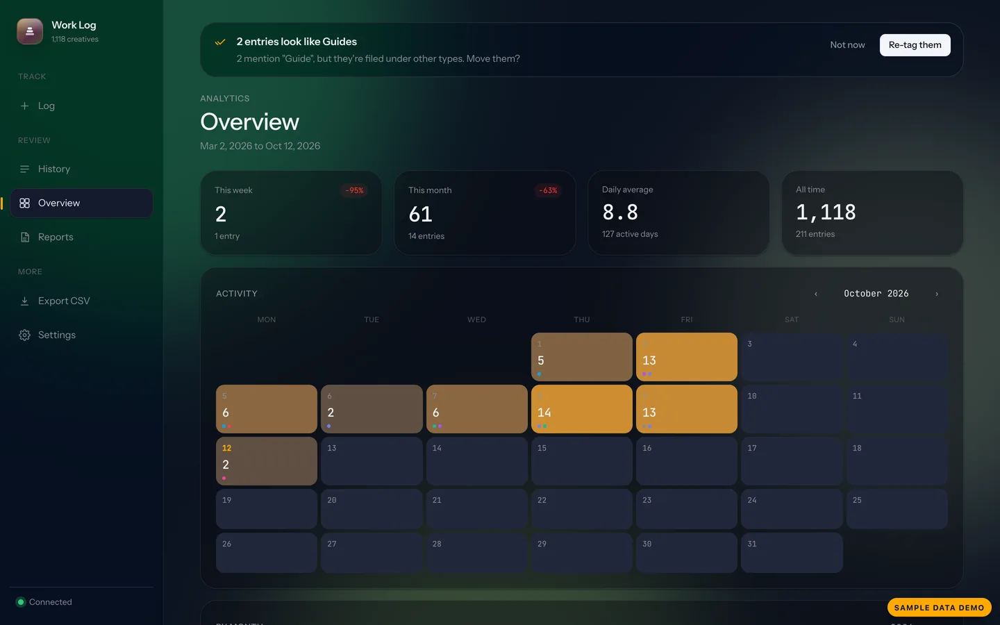

Tracking 2,901 creatives across 432 projects by hand was the problem. So I had Claude Code build the solution: a personal creative work log on a Google Sheet, deployed as an installable PWA, with calendar, charts and one-click weekly reports.
